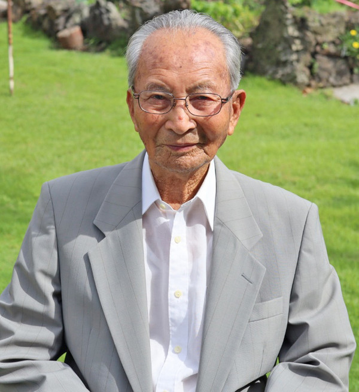
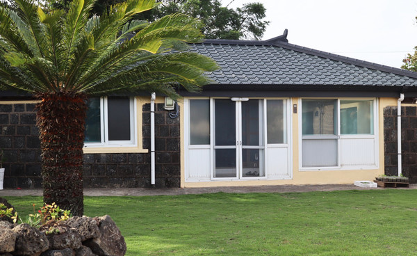
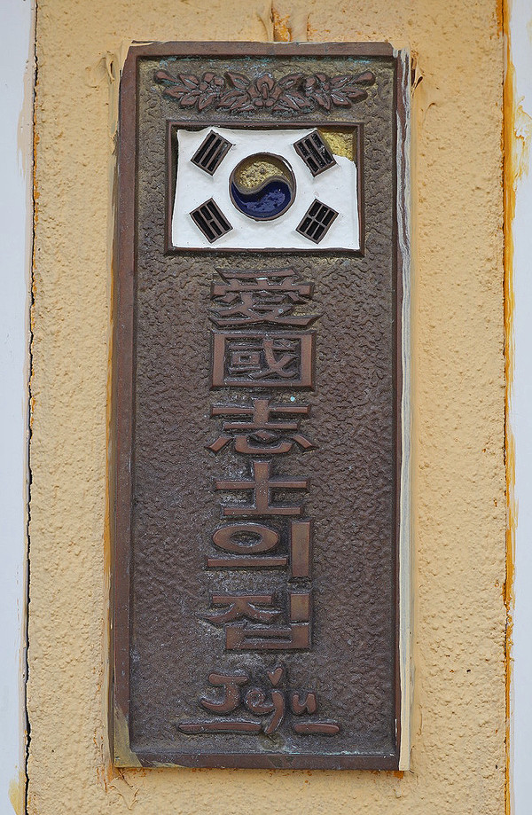
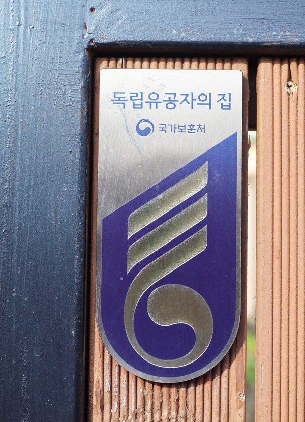
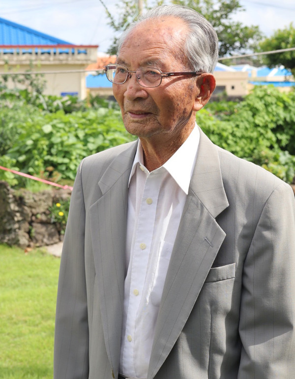
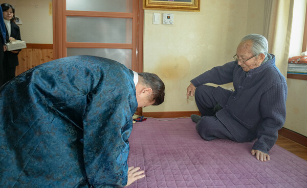
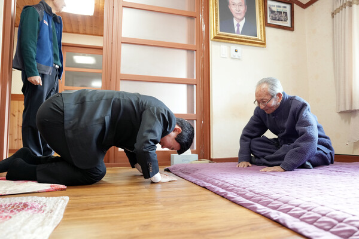

Birth & early years

Jeju-born Korean Independence Activist · 1924–present
Kang Tae-sun
The Last Independence Activist of Jeju Jeju's only living, officially recognized patriot of the Korean independence movement
A clandestine nationalist in wartime Osaka, who turned fear and rumor into the hope of independence — Jeju's only living recognized independence patriot.
Who he was, in one breath
From a Jeju village to an Osaka courtroom
A life across two countries and an empire's fall
Japan-based clandestine nationalist activism
Tap any item to see how it connects to Kang.
Recognition came late — then memory caught up
A hundred years on — the house in Siheung-ri where the nation still comes to bow






Reported quotation & later oral testimony
“일본은 반드시 패망할 것”
“Japan will surely be defeated.”
Reported courtroom defiance, Osaka.
“나는 조선, 일본 사람이 아니고 조선 사람이다.”
“I am Korean; I am not Japanese.”
Broadcast in a 2026 JIBS interview.
“물고문도 당했다.”
“I was subjected to water torture as well.”
From a 2024 local-history article.
“나약한 정신을 버려야 된다.”
“We must cast off a weak spirit.”
A short exhortation, 2026 JIBS interview.
A living patriot, captured on camera


The record behind this history
| Source | Type | Date | Why it matters | Reliability | Link |
|---|---|---|---|---|---|
| Korean Independence Movement Information System, “강태선 姜太善” | Official reference biography | n.d. | Core official biography. | High | i815.or.kr ↗ |
| MPVA e-gonghun, “독립유공자 공적정보” | Official methodology page | 2026 | Explains how profiles are built. | High | e-gonghun ↗ |
| Kang Man-ik, “제주지역 독립운동 사적지 활용방안” | Peer-reviewed article | 2018 | Jeju Japan-front context. | High | KCI ↗ |
| “유언비어를 통해 본 일제말 조선민중의 위기담론” | Peer-reviewed article | 2011 | Wartime “hope discourse.” | High | PDF ↗ |
| Hankook Ilbo via Daum, “100세 앞둔 독립운동가…” | Newspaper interview | 2022 | Key oral-history interview. | Med-high | Daum ↗ |
| Newsje, “시흥리 강태선 지사 생가” | Local history / oral history | 2024 | Detailed local chronology. | Medium | Newsje ↗ |
| Yonhap, “강태선 애국지사 기림비 제막식” | National wire report | 2024 | Memorial stele report. | Med-high | Yonhap ↗ |
| JIBS, “항일의 불꽃.. 102살 제주 애국지사를 만나다” | Regional broadcaster interview | 2026 | Rich late oral testimony. | Med-high | JIBS ↗ |
| Korea Policy Photo / MPVA visit page | Official photo caption | 2026 | Confirms living status, 2026. | High | korea.kr ↗ |